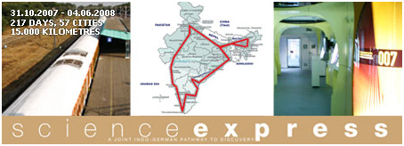
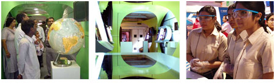

WELCOME TO THE SCIENCE EXPRESS! |


"Science Express”, a joint Indo-German multimedia exhibition |
The Science Express is a joint Indo-German pathway to discovery. It invites you along on a fascinating expedition into the mysteries of our world – to groundbreaking discoveries, emerging issues of cutting-edge science and future-oriented technologies. You will travel from the smallest elements of our world to the largest structures in outer space. Exciting images, video clips and interactive exhibits will offer fascinating insights into the hidden worlds of atoms, cells, neurons and bytes, as well as the complex interactions of civilizations, planets, stars and galaxies. The exhibition takes modern research out of the lab and reveals just how relevant science is to everyday life. Discover how science is enabling society to face the global challenges of the 21st century. The Science Express will travel throughout India and make stops in 55 cities. |